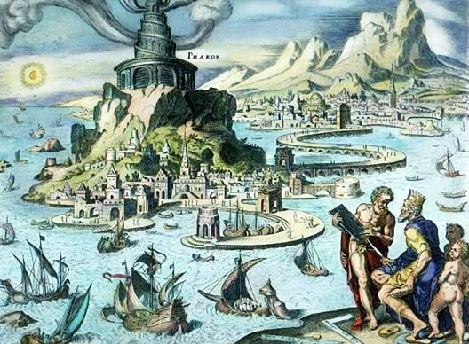

Museum of Antiquities

Remarkable constructions of classical antiquity almost completely lost in time.
The Seven Wonders
Great Pyramid of Giza

- Date of construction: 2584–2561 BC
- Builders: Egyptians
- Location: Giza Necropolis, Egypt
Hanging Gardens of Babylon
- Date of construction: Circa 600 BC
- Builders: Babylonians
- Location: Nineveh, Iraq
Temple of Artemis

- Date of construction: Circa 550 BC
- Builders: Greeks
- Location: Selçuk, Turkey
Statue of Zeus at Olympia

Mausoleum at Halicarnassus

- Date of construction: 351 BC
- Builders: Persians
- Location: Bodrum, Turkey
Colossus of Rhodes

- Date of construction: 292–280 BC
- Builders: Greeks
- Location: Rhodes, Greece
Lighthouse of Alexandria

- Date of construction: Circa 280 BC
- Builders: Ptolemaic Egyptians
- Location: Alexandria, Egypt
Buy tickets
Come explore the ancient wonders with our amazing teleportation technology that jumps you around the world.
$15 for adults $5 for kidsBecome a member
Is one visit not enough?
Join our yearly program for unlimited access.
Now playing on the large screen

This week at the museum
- Saturday & Sunday
- Atlantis city tours
- Underwater explorer: see outside the bubble
- Monday
- Try this out: have fun building your own ancient wonder
- Amazing architecture: explore the science of how the pyramids were built
- Tuesday
- Awesome art: witness art in action as a marble sculpture is born
- Gold rush: learn about the metal and why it was so coveted
- Wednesday
- Try this out: wear clothes that the ancients wore
- Gardenology: learn to plant and maintain amazing gardens
- Thursday
- Amazing architecture: explore the science of buildings
- Gardenology: the science behind trees and the environment
- Friday
- Atlantis city tours
- Awesome art: witness a full mosaic floor under construction